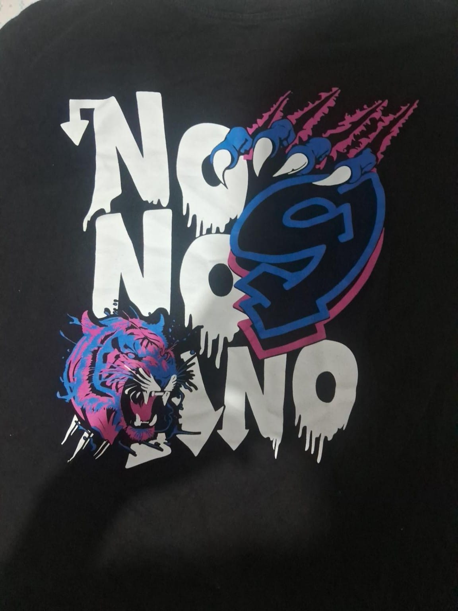
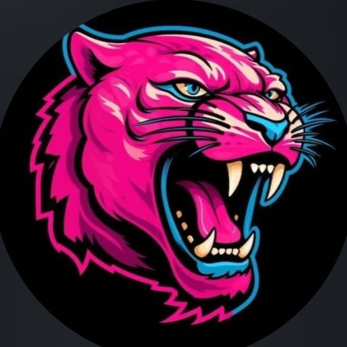

Desenvolvido por
RaphaelSilva
9º ano B↗
Feira de Ciências · 2026
9º B apresenta
9º ano B — EMEF Vereador Francisco Munhoz Sanches
Um projeto feito em grupo, a partir de algo que observamos todos os dias: quando a rotina fica mais clara, todo mundo pode encontrar seu próprio jeito de seguir.
Conheça nossa história

Uma ideia em construção
Somos os alunos do 9º ano B da EMEF Vereador Francisco Munhoz Sanches.
Juntos, criamos o projeto Incluir + Rotina Inteligente a partir de uma observação dentro da nossa própria sala: percebemos como a falta de uma rotina organizada afeta muitos colegas, causando ansiedade, esquecimentos e dificuldade de concentração.
A partir disso, nos reunimos, discutimos e fomos amadurecendo a ideia em grupo até chegar no nosso resultado final.
Para o desenvolvimento do projeto, tivemos a ajuda e orientação dos professores do CIEBP, que nos apoiaram na pesquisa, na organização das ideias e na construção da nossa proposta.
Nosso objetivo é criar uma ferramenta simples, visual e acessível que ajude a organizar tarefas, horários de estudo, lembretes e momentos de bem-estar. Mais do que um organizador, queremos promover autonomia, tranquilidade e inclusão.
Este site foi criado por nós para apresentar nosso projeto e mostrar que uma rotina inteligente pode incluir todo mundo.
— 9º ano BCom muita colaboração
Uma ideia construída com curiosidade, conversa e trabalho em grupo.
Desenvolvido por
Desenvolvido por
Desenvolvido por
Com apoio e orientação
Professora Ellen
Um projeto da nossa sala
Feira de Ciências 2026 · 9º ano B · EMEF Vereador Francisco Munhoz Sanches
Voltar para o projeto